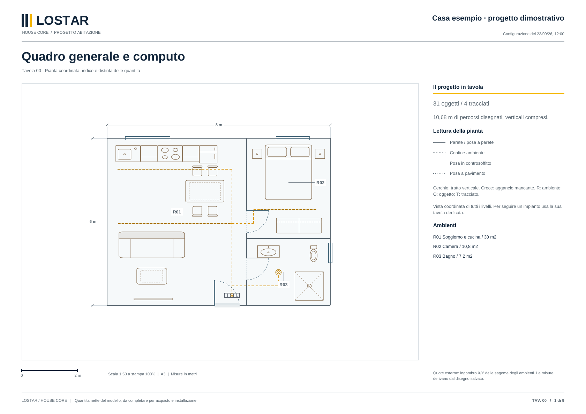

Planimetria e arredi
Importa la pianta, definisci gli ambienti e disponi gli arredi. Passa dal disegno 2D alla vista 3D per leggere ingombri, spazi e relazioni.
House Core è il sistema operativo locale della casa. Inizia con House Studio: progetti gratis ambienti e impianti, esporti i livelli in PDF e li condividi con Lostar per valutare hardware ed eventuale installazione.
Windows e Mac · Anteprima gratuita · Progetto locale
Usa la planimetria e la vista 3D per definire gli spazi. Aggiungi gli elementi e i percorsi che serviranno a descrivere l’impianto.
Importa la pianta, definisci gli ambienti e disponi gli arredi. Passa dal disegno 2D alla vista 3D per leggere ingombri, spazi e relazioni.
Posiziona luci e strisce LED, sperimenta scene ed effetti nell’ambiente virtuale. Metti in relazione l’illuminazione con ciò che arreda la stanza.
Organizza i diversi livelli e disegna i tracciati. Quote e lunghezze, comprese le salite e le discese inserite, danno una base concreta al computo.
Usa la chat per esplorare il progetto e interagire con la casa virtuale, mantenendo ambienti e dispositivi nello stesso contesto.
Le funzioni AI dipendono dal servizio configurato e possono richiedere credenziali e costi del fornitore.
Esporta tutta la casa o seleziona soltanto i layer che vuoi condividere. Un unico ZIP raccoglie i PDF, pronti per il confronto con Lostar e con chi seguirà i lavori.
La progettazione virtuale con House Studio è gratuita. House Core lavora sul computer locale della casa e collega il modello ai dispositivi compatibili. Lostar parte dai tuoi layer per valutare hardware, configurazione e attività necessarie; il collegamento reale è un percorso distinto dalla progettazione.
Parliamo del tuo progettoQuadro e componenti di gestione scelti in funzione del progetto, delle utenze e delle compatibilità da verificare.
Indica dove si trova la casa e lo stato dei lavori. Valutiamo insieme l’intervento e il coordinamento con i professionisti che seguono il cantiere.
Disponibilità, sopralluogo, attività e tempi vengono concordati nel preventivo. I lavori elettrici sono affidati a personale qualificato.Scarica l’anteprima gratuita per Windows e macOS e crea il tuo progetto. Esplora spazi e impianti senza avere già acquistato l’hardware: la progettazione comprende una casa virtuale ed è gratuita. Per collegare dispositivi reali serve una licenza Lostar.
House Core · Edizione House StudioHouse Studio in Applicazioni e aprilo con un doppio clic.Installa House Studio, scegli la cartella e premi Installa. Trovi House Studio sul Desktop e nel menu Start.Il pacchetto parte da un nuovo progetto vuoto. Trovi le istruzioni complete, anche per la prima apertura di un’anteprima non firmata, nel file LEGGIMI dell’archivio.
Prepara i PDF del progetto e indica cosa vuoi realizzare. Scegli se richiedere la sola fornitura hardware o anche l’installazione.
House Core comprende il software e il piccolo computer locale che collegano stanze, dispositivi e impianti. House Studio è l’applicazione desktop con cui prepari il progetto virtuale. Il modello elettrico descrive le relazioni dichiarate tra apparecchio, punto di connessione, circuito, protezione e misuratore; non ricostruisce da solo il cablaggio e non sostituisce le protezioni elettriche.
Sì. Scarichi l’anteprima e progetti la casa virtuale gratuitamente. Hardware e installazione sono servizi separati, da valutare su preventivo. Eventuali servizi AI esterni possono prevedere costi propri.
No. Il progetto nasce in virtuale. Puoi posizionare gli elementi e provare le interazioni senza controller o dispositivi fisici. Il collegamento all’impianto reale richiede hardware e compatibilità da verificare.
I PDF descrivono ciò che hai disegnato: spazi, elementi, percorsi e quantità nette. Sono una base utile al confronto e al computo, da completare e verificare con un professionista prima di acquisti e lavori, anche per carichi, sezioni, alimentazioni e sicurezza.
No. Esporti sul tuo computer solo i PDF che selezioni. Scegli tu se condividerli: prepari la richiesta, alleghi lo ZIP e invii il messaggio a Lostar.
Sì. Puoi richiedere la sola fornitura e far seguire l’installazione ai professionisti del tuo cantiere. Se vuoi coinvolgere Lostar anche nell’installazione, indica località ed esigenze nella richiesta.
Prepara il progetto con House Studio gratuito.
Inizia con House StudioDalla pianta alla vita quotidiana: luci, assistente locale, costi e materiali raccontati attraverso House Core. Approfondisci anche le strisce LED a soffitto e i quadri elettrici.
Casa domotica: leggi la guida completa